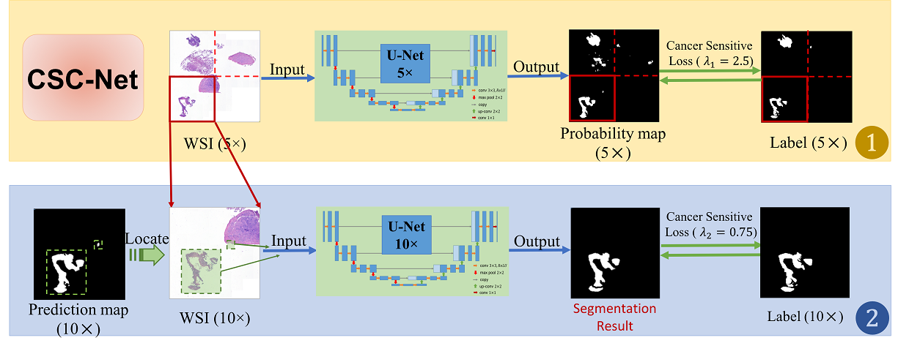

|
Yushan Zheng
郑钰山 Ph.D
School of Engineering Medicine, Beihang University,
Beijing 100191, China
Dr. Yushan Zheng received his bachelor's, Master's and Doctor's degrees in 2012, 2015, and 2019 from Beihang University. Now he is an associate professor with School of Engineering medicine, Beihang University and is also with Remex Lab.
His research interests include medical image processing, histopathological image retrieval, segmentation, normalization, digital pathology, deep learning, etc.
中文主页: http://shi.buaa.edu.cn/zhengyushan/zh_CN/index.htm
Email: yszheng@buaa.edu.cn
Github: github.com/zhengyushan
Goole Scholar ID: j497JUoAAAAJ
ORCID: 0000-0003-3302-0481
Address:
No.37, Xueyuan Road, Haidian District,
Beijing 100191, China
|
|
|
|
Research |

|
Pathological whole slide image analysis, 2017-present
The project aims to developing online applications for histopathological and cytological whole slide images based on deep learning methods. The applications help cancer scrrening, mutation prediction, cancer cells detection, etc. in WSIs. This direction of research involves weakly supervised represention learning, whole slide image classification, etc.
|
|
Content-based histological image retrieval, 2014-present
The project studies the methodology of content-based image retrieval for histological whole slide image database. It helps pathologists understand a region of histological image through searching for similar regions from the database containing diagnosed cases. This project involves research on feature extraction, hashing, and specific retrieval strategies from large-scale gigapixel image database. This research is supported by National Natural Science Foundations of China (Grant No. 61901018) and China Postdoctoral Science Foundation (Grant No. 2019M650446).
|

|
Histopathological image normalization, 2018-2019
This project studies color normalization or standardization methods for deep learning based whole slide image analysis. The goal of this project is to develop lightweight and meanwhile effective modules and online stain normalization, style transfer and domain adaptation applications for histopathology images on digital pathology platforms.
|
|
|
Publications |
2023 |
|
Position-Aware Masked Autoencoder for Histopathology WSI Representation Learning
Kun Wu, Yushan Zheng*, Jun Shi*, Fengying Xie and Zhiguo Jiang
Medical Image Computing and Computer Assisted Intervention (MICCAI), 2023
Abstract
BibTeX
Code
Transformer-based multiple instance learning (MIL) framework has been proven advanced for whole slide image (WSI) analysis. However, existing spatial embedding strategies in Transformer can only represent fixed structural information, which are hard to tackle the scale-varying and isotropic characteristics of WSIs. Moreover, the current MIL cannot take advantage of a large number of unlabeled WSIs for training. In this paper, we propose a novel self-supervised whole slide image representation learning framework named position-aware masked autoencoder (PAMA), which can make full use of abundant unlabeled WSIs to improve the discrimination of slide features. Moreover, we propose a position-aware cross-attention (PACA) module with a kernel reorientation (KRO) strategy, which makes PAMA able to maintain spatial integrity and semantic enrichment during the training. We evaluated the proposed method on a public TCGA-Lung dataset with 3,064 WSIs and an in-house Endometrial dataset with 3,654 WSIs, and compared it with 6 state-of-the-art methods. The results of experiments show our PAMA is superior to SOTA MIL methods and SSL methods.
@InProceedings{wu2023positional,
author = {Kun Wu, Yushan Zheng, Jun Shi, Fengying Xie, Zhiguo Jiang},
title = {Position-Aware Masked Autoencoder for Histopathology WSI Representation Learning},
booktitle = {Medical Image Computing and Computer Assisted Intervention -- MICCAI 2023},
year = {2023},
pages = {714--724},
}
|
|
Kernel Attention Transformer for Histopathology Whole Slide Image Analysis and Assistant Cancer Diagnosis
Yushan Zheng, Jun Li, Jun Shi*, Fengying Xie, Jianguo Huai, Ming Cao, and Zhiguo Jiang*
IEEE Transactions on Medical Imaging, 2023
PDF
Abstract
BibTeX
Code
Transformer has been widely used in histopathology whole slide image analysis. However, the design of token-wise self-attention and positional embedding strategy in the common Transformer limits its effectiveness and efficiency when applied to gigapixel histopathology images. In this paper, we propose a novel kernel attention Transformer (KAT) for histopathology WSI analysis and assistant cancer diagnosis. The information transmission in KAT is achieved by cross-attention between the patch features and a set of kernels related to the spatial relationship of the patches on the whole slide images. Compared to the common Transformer structure, KAT can extract the hierarchical context information of the local regions of the WSI and provide diversified diagnosis information. Meanwhile, the kernel-based cross-attention paradigm significantly reduces the computational amount. The proposed method was evaluated on three large-scale datasets and was compared with 8 state-of-the-art methods. The experimental results have demonstrated the proposed KAT is effective and efficient in the task of histopathology WSI analysis and is superior to the state-of-the-art methods. Code: https://github.com/zhengyushan/kat.
@article{zheng2023kernel,
author = {Yushan Zheng, Jun Li, Jun Shi, Fengying Xie, Jianguo Huai, Ming Cao, Zhiguo Jiang},
title = {Kernel Attention Transformer for Histopathology Whole Slide Image Analysis and Assistant Cancer Diagnosis},
journal = {IEEE Transactions on Medical Imaging},
year = {2023}
}
|
2022 |
|
Histopathology Cross-Modal Retrieval based on Dual-Transformer Network
Dingyi Hu, Yushan Zheng*, Fengying Xie, Zhiguo Jiang, and Jun Shi
IEEE International Conference on Bioinformatics and Bioengineering (BIBE), 2022
PDF
Abstract
BibTeX
Computer-aided cancer diagnosis (CAD) methods based on the histopathological images have achieved great development. The content-based whole slide image (WSI) retrieval is one of the important application that can search for the informative data to assist clinical diagnosis. It is notable that the current retrieval system are mainly developed based on the image content and image labels. The diagnosis report for the WSIs given by the pathologists are also valuable data, but have not yet been adequately considered in modeling. In this paper, we propose a cross-modal retrieval framework based on histopathology WSIs and diagnosis report, which can simultaneously achieve four retrieval tasks for histopathology database across WSIs and diagnosis reports. The compact binary features from both WSIs and diagnosis reports are first extracted, and then built in a common vision-language semantic feature space by the constraint of the designed cross hashing loss function. The method was verified on a gastric histopathology dataset that contains 932 gastric cases with 4 lesion categories. Experimental results have demonstrated the effectiveness of the proposed method in the cross-modal retrieval tasks for digital pathology system.
@inproceedings{hu2022histopathology,
author = {Dingyi Hu, Yushan Zheng, Fengying Xie, Zhiguo Jiang, Jun Shi},
title = {Histopathology Cross-Modal Retrieval based on Dual-Transformer Network},
booktitle = {IEEE International Conference on Bioinformatics and Bioengineering (BIBE)},
year = {2022}
}
|
|
Kernel Attention Transformer (KAT) for Histopathology Whole Slide Image Classification
Yushan Zheng*, Jun Li, Jun Shi, Fengying Xie, Zhiguo Jiang
Medical Image Computing and Computer Assisted Intervention (MICCAI), 2022
PDF
Abstract
BibTeX
Code
Transformer has been widely used in histopathology whole slide image (WSI) classification for the purpose of tumor grading, prognosis analysis, etc. However, the design of token-wise self-attention and positional embedding strategy in the common Transformer limits the effectiveness and efficiency in the application to gigapixel histopathology images. In this paper, we propose a kernel attention Transformer (KAT) for histopathology WSI classification. The information transmission of the tokens is achieved by cross-attention between the tokens and a set of kernels related to a set of positional anchors on the WSI. Compared to the common Transformer structure, the proposed KAT can better describe the hierarchical context information of the local regions of the WSI and meanwhile maintains a lower computational complexity. The proposed method was evaluated on a gastric dataset with 2040 WSIs and an endometrial dataset with 2560 WSIs, and was compared with 6 state-of-the-art methods. The experimental results have demonstrated the proposed KAT is effective and efficient in the task of histopathology WSI classification and is superior to the state-of-the-art methods.
@inproceedings{zheng2022kernel,
author = {Yushan Zheng, Jun Li, Jun Shi, Fengying Xie, Zhiguo Jiang},
title = {Kernel Attention Transformer (KAT) for Histopathology Whole Slide Image Classification},
booktitle = {Medical Image Computing and Computer Assisted Intervention
-- MICCAI 2022},
year = {2022}
}
|
|
Lesion-Aware Contrastive Representation Learning For Histopathology Whole Slide Images Analysis
Jun Li, Yushan Zheng*, Kun Wu, Jun Shi*, Fengying Xie, Zhiguo Jiang
Medical Image Computing and Computer Assisted Intervention (MICCAI), 2022
PDF
Abstract
BibTeX
Code
Local representation learning has been a key challenge to promote the performance of the histopathological whole slide images analysis. The previous representation learning methods followed the supervised learning paradigm. However, manual annotation for large-scale WSIs is time-consuming and labor-intensive. Hence, the self-supervised contrastive learning has recently attracted intensive attention. The present contrastive learning methods treat each sample as a single class, which suffers from class collision problems, especially in the domain of histopathology image analysis. In this paper, we proposed a novel contrastive representation learning framework named Lesion-Aware Contrastive Learning (LACL) for histopathology whole slide image analysis. We built a lesion queue based on the memory bank structure to store the representations of different classes of WSIs, which allowed the contrastive model to selectively define the negative pairs during the training. Moreover, We designed a queue refinement strategy to purify the representations stored in the lesion queue. The experimental results demonstrate that LACL achieves the best performance in histopathology image representation learning on different datasets, and outperforms state-of-the-art methods under different WSI classification benchmarks.
@inproceedings{li2022lesion,
author = {Jun Li, Yushan Zheng, Kun Wu, Jun Shi, Fengying Xie, Zhiguo Jiang},
title = {Lesion-Aware Contrastive Representation Learning For Histopathology Whole Slide Images Analysis},
booktitle = {Medical Image Computing and Computer Assisted Intervention
-- MICCAI 2022},
year = {2022}
}
|
|
Global-local attention network for weakly supervised cervical cytology ROI analysis
Jun Shi*, Kun Wu, Yushan Zheng*, Yuxin He, Jun Li, Zhiguo Jiang and Lanlan Yu
IEEE 19th International Symposium on Biomedical Imaging, 2022
PDF
Abstract
BibTeX
Existing supervised Convolutional Neural Network (CNN)
approaches for cervical cytology image analysis generally
rely on the heavy manual annotation for each cell or cell
mass and thus lead to extensive time and effort. In this paper,
we propose a global-local network for weakly supervised
cervical cytology region of interest (ROI) analysis. It aims
to perform the classification for ROIs and further classify
the cells only with the ROI labels. Specifically, the proposed
method firstly detects the cells within ROI and extracts the
CNN features of cells. Then attention-based bidirectional
LSTM (Att-BLSTM) is applied to explore the global
contextual information within ROI. On the other hand, the
Vision Transformer (ViT) is used to exploit the local
attentive representations of the cells in ROIs. The cross
attention (CA) is applied to incorporate the global
contextual features and local patterns and thus generates
more discriminative feature representation of ROI. More
importantly, the CA score is used as the pseudo label to
select top and least attentive cells. Therefore, the in-theclass and out-of-the-class CA branches are trained to
achieve the cell classification. Experimental results
demonstrate the effectiveness of our method for cervical
cytology ROI and cell classification, and the weak
supervision of the image-level label has great potential to
promote the automatic whole slide cervical image analysis
and alleviate the workload of cytologists.
@Article{shi2022global,
author = {Jun Shi*, Kun Wu, Yushan Zheng*, Yuxin He, Jun Li, Zhiguo Jiang and Lanlan Yu},
title = {Global-local attention network for weakly supervised cervical cytology ROI analysis},
booktitle = {IEEE 19th International Symposium on Biomedical Imaging},
year = {2022}
}
|

|
Encoding Histopathology Whole Slide Images with Location-aware Graphs for Diagnostically Relevant Regions Retrieval
Yushan Zheng, Zhiguo Jiang*, Jun Shi*, Fengying Xie, Haopeng Zhang, Wei Luo, Dingyi Hu, Shujiao Sun, Zhongmin Jiang, and Chenghai Xue
Medical Image Analysis, 2022
PDF
Abstract
BibTeX
Code
Content-based histopathological image retrieval (CBHIR) has become popular in recent years in histopathological image analysis. CBHIR systems provide auxiliary diagnosis information for pathologists by searching for and returning regions that are contently similar to the region of interest (ROI) from a pre-established database. It is challenging and yet significant in clinical applications to retrieve diagnostically relevant regions from a database consisting of histopathological whole slide images (WSIs). In this paper, we propose a novel framework for regions retrieval from WSI database based on location-aware graphs and deep hash techniques. Compared to the present CBHIR framework, both structural information and global location information of ROIs in the WSI are preserved by graph convolution and self-attention operations, which makes the retrieval framework more sensitive to regions that are similar in tissue distribution. Moreover, benefited from the graph structure, the proposed framework has good scalability for both the size and shape variation of ROIs. It allows the pathologist to define query regions using free curves according to the appearance of tissue. Thirdly, the retrieval is achieved based on the hash technique, which ensures the framework is efficient and adequate for practical large-scale WSI database. The proposed method was evaluated on an in-house endometrium dataset with 2650 WSIs and the public ACDC-LungHP dataset. The experimental results have demonstrated that the proposed method achieved a mean average precision above 0.667 on the endometrium dataset and above 0.869 on the ACDC-LungHP dataset in the task of irregular region retrieval, which are superior to the state-of-the-art methods. The average retrieval time from a database containing 1855 WSIs is 0.752 ms.
@Article{zheng2022encoding,
author = {Zheng, Yushan and Jiang, Zhiguo and Shi, Jun and Xie, Fengying and Zhang, Haopeng and
Luo, Wei and Hu, Dingyi and Sun, Shujiao and Jiang, Zhongmin and Xue, Chenghai},
title = {Encoding histopathology whole slide images with location-aware graphs for diagnostically relevant regions retrieval},
journal = {Medical Image Analysis},
year = {2022},
volumn = {76},
pages = {102308},
doi = {https://doi.org/10.1016/j.media.2021.102308},
}
|
|
Weakly Supervised Histopathological Image Representation Learning based on Contrastive Dynamic Clustering
Jun Li, Zhiguo Jiang, Yushan Zheng*, Haopeng Zhang, Jun Shi, Dingyi Hu, Wei Luo, Zhongmin Jiang, and Chenghai Xue
SPIE Medical Imaging, 2022
PDF
Abstract
BibTeX
Code
Feature representations of histopathology whole slide images (WSIs) are crucial to the downstream applications
for computer-aided cancer diagnosis, including whole slide image classification, region of interest detection, hash
retrieval, prognosis analysis, and other high-level inference tasks. State-of-the-art methods for whole slide image
feature extraction generally rely on supervised learning algorithms based on fine-grained manual annotations,
unsupervised learning algorithms without annotation, or directly use pre-trained features. At present, there is
a lack of research on weakly supervised feature learning methods that only utilize WSI-level labeling. In this
paper, we propose a weakly supervised framework that learns the feature representations of various lesion areas
from histopathology whole slide images. The proposed framework consists of a contrastive learning network as
the backbone and a designed contrastive dynamic clustering (CDC) module to embedding the lesion information
into the feature representations. The proposed method was evaluated on a large scale endometrial whole slide
image dataset. The experimental results have demonstrated that our method can learn discriminative feature
representations for histopathology image classification and the quantitative performance of our method is close
to the fully-supervision learning methods
@inproceedings{li2021weakly,
author = {Jun Li, Zhiguo Jiang, Yushan Zheng, Haopeng Zhang, Jun Shi, Dingyi Hu,
Wei Luo, Zhongmin Jiang, and Chenghai Xue},
title = {Weakly Supervised Histopathological Image Representation Learning based on Contrastive Dynamic Clustering},
booktitle = {SPEI Medical Imaging 2022},
year = {2022},
}
|
2021 |
|
Frequency-based convolutional neural network for efficient segmentation of histopathology whole slide images
Wei Luo, Yushan Zheng, Dingyi Hu, Jun Li, Chenghai Xue, and Zhiguo Jiang
International Conference on Image and Graphics (ICIG) 2021
PDF
Abstract
BibTeX
CNN-based methods for WSI segmentation are time-consuming under the limits of communication bandwidth and memory usage, due to the high pixel resolution of WSIs. In this paper, we propose a novel framework for accelerating the segmentation of digital histopathology WSIs in the frequency domain. Based on the characteristics of the JPEG format in data storage and transmission on the existing digital histopathological diagnosis cloud platform, we extract DCT coefficients from the JEPG decoding and compress them into the DCT feature cubes by a frequency selection block. Based on the DCT feature cubes, we propose an extremely light-weighted model named Efficient DCT-Network (EDCT-Net). The size of the input data, as well as the bandwidth requirement for CPU-GPU transmitting, for EDCT-net reduces by 96% compared to the common CNN-based methods. And, the number of model parameters and the floating-point operations (FLOPs) for EDCT-Net decreases by 98% and 94% compared to the baseline method. The experimental results have demonstrated that our method achieves a Dice score of 0.811 with only 8 frequency channels in the task of endometrial histopathology WSI segmentation, which is comparable with state-of-the-art methods.
@inproceedings{luo2021frequency,
title = "Frequency-Based Convolutional Neural Network for Efficient Segmentation of Histopathology Whole Slide Images.",
author = "Wei {Luo} and Yushan {Zheng} and Dingyi {Hu} and Jun {Li} and Chenghai {Xue} and Zhiguo {Jiang}",
booktitle = "International Conference on Image and Graphics",
pages = "584--596",
year = "2021"
}
|
|
Diagnostic Regions Attention Network (DRA-Net) for Histopathology WSI Recommendation and Retrieval
Yushan Zheng, Zhiguo Jiang*, Jun Shi, Fengying Xie, Haopeng Zhang, Huai Jianguo, Cao Ming, and Yang Xiaomiao
IEEE Transactions on Medical Imaging, 2021
PDF
Abstract
BibTeX
Code
The development of whole slide imaging techniques and online digital pathology platforms have accelerated the popularization of telepathology for remote tumor diagnoses. During a diagnosis, the behavior information of the pathologist can be recorded by the platform and then archived with the digital case. The browsing path of the pathologist on the WSI is one of the valuable information in the digital database because the image content within the path is expected to be highly correlated with the diagnosis report of the pathologist. In this paper, we proposed a novel approach for computer-assisted cancer diagnosis named session-based histopathology image recommendation (SHIR) based on the browsing paths on WSIs. To achieve the SHIR, we developed a novel diagnostic regions attention network (DRA-Net) to learn the pathology knowledge from the image content associated with the browsing paths. The DRA-Net does not rely on the pixel-level or region-level annotations of pathologists. All the data for training can be automatically collected by the digital pathology platform without interrupting the pathologists' diagnoses. The proposed approaches were evaluated on a gastric dataset containing 983 cases within 5 categories of gastric lesions. The quantitative and qualitative assessments on the dataset have demonstrated the proposed SHIR framework with the novel DRA-Net is effective in recommending diagnostically relevant cases for auxiliary diagnosis. The MRR and MAP for the recommendation are respectively 0.816 and 0.836 on the gastric dataset.
@Article{zheng2020diagnostic,
author = {Zheng, Yushan and Jiang, Zhiguo and Shi, Jun and Xie, Fengying and
Zhang, Haopeng and Huai, Jianguo and Cao, Ming and Yang, Xiaomiao},
title = {Diagnostic Regions Attention Network (DRA-Net) for Histopathology
WSI Recommendation and Retrieval},
journal = {IEEE Transactions on Medical Imaging},
volume = {40},
number = {3},
pages = {1090--1103}
year = {2021},
doi = {10.1109/TMI.2020.3046636},
}
|
|
Stain standardization capsule for application-driven histopathological image normalization
Yushan Zheng, Zhiguo Jiang*, Haopeng Zhang, Fengying Xie, Dingyi Hu, Shujiao Sun, Jun Shi, and Chenghai Xue
IEEE Journal of Biomedical and Health Informatics, 2021
PDF
Abstract
BibTeX
Code
Color consistency is crucial to developing robust deep learning methods for histopathological image analysis. With the increasing application of digital histopathological slides, the deep learning methods are probably developed based on the data from multiple medical centers. This requirement makes it a challenging task to normalize the color variance of histopathological images from different medical centers. In this paper, we propose a novel color standardization module named stain standardization capsule based on the capsule network and the corresponding dynamic routing algorithm. The proposed module can learn and generate uniform stain separation outputs for histopathological images in various color appearance without the reference to manually selected template images. The proposed module is light and can be jointly trained with the application-driven CNN model. The proposed method was validated on three histopathology datasets and a cytology dataset, and was compared with state-of-the-art methods. The experimental results have demonstrated that the SSC module is effective in improving the performance of histopathological image analysis and has achieved the best performance in the compared methods.
@article{zheng2020stain,
author = {Zheng, Yushan and Jiang, Zhiguo and Zhang, Haopeng and Xie, Fengying and Hu, Dingyi
and Sun, Shujiao and Shi, Jun and Xue, Chenghai},
title = {Stain standardization capsule for application-driven histopathological image normalization},
journal = {IEEE Journal of Biomedical and Health Informatics},
volume = {25},
number = {2},
pages = {337--347}
year = {2021},
}
|
2020 |

|
Tracing Diagnosis Paths on Histopathology WSIs for Diagnostically Relevant Case Recommendation
Yushan Zheng*, Zhiguo Jiang, Haopeng Zhang, Fengying Xie, and Jun Shi
Medical Image Computing and Computer Assisted Interventions (MICCAI), 2020
PDF
Abstract
BibTeX
Supplementary Material
Code
Telepathology has enabled the remote cancer diagnosis based on digital pathological whole slide images (WSIs). During the diagnosis, the behavior information of the pathologist can be recorded by the platform and then archived with the digital cases. The diagnosis path of the pathologist on a WSI is valuable information since the image content within the path is highly correlated with the diagnosis report of the pathologist. In this paper, we proposed a novel diagnosis path network (DPathNet). DPathNet utilizes the diagnosis paths of pathologists on the WSIs as the supervision to learn the pathology knowledge from the image content. Based on the DPathNet, we develop a novel approach for computer-aided cancer diagnosis named session-based histopathology image recommendation (SHIR). SHIR summaries the information of a WSI while the pathologist browsing the WSI and actively recommends the relevant cases within similar image content from the database. The proposed approaches are evaluated on a gastric dataset containing 983 cases within 5 categories of gastric lesions. The experimental results have demonstrated the effectiveness of the DPathNet to the SHIR task and the supervision of the diagnosis path is sufficient to train the DPathNet. The MRR and MAP of the proposed SHIR framework are respectively 0.741 and 0.777 on the gastric dataset.
@inproceedings{zheng2020tracing,
author = {Zheng, Yushan and Jiang, Zhiguo and Zhang, Haopeng and
Xie, Fengying and Shi, Jun},
title = {Tracing Diagnosis Paths on Histopathology WSIs for
Diagnostically Relevant Case Recommendation},
booktitle = {Medical Image Computing and Computer Assisted Intervention
-- MICCAI 2020},
year = {2020},
pages = {459--469},
doi = {10.1007/978-3-030-59722-1_44},
}
|
|
Informative retrieval framework for histopathology whole slides images based on deep hashing network
Dingyi Hu, Yushan Zheng*, Haopeng Zhang, Jun Shi, Fengying Xie, and Zhiguo Jiang
IEEE 17th International Symposium on Biomedical Imaging (ISBI), 2020
PDF
Abstract
BibTeX
Histopathology image retrieval is an emerging application for Computer-aided cancer diagnosis. However, most of current retrieval methods have ignored the characteristic of histopathology images. It causes repeated results within similar image content from the same slide. Meanwhile, the data sets cannot be sufficiently utilized. To solve these issues, we proposed an informative retrieval framework based on deep hashing network. Specifically, a novel loss function for the hashing network and a retrieval strategy are designed, which contributes to more informative retrieval results without reducing the retrieval precision. The proposed method was verified on the ACDC-LungHP dataset and compared with the state-of-the-art method. The experimental results have demonstrated the effectiveness of our method in the retrieval of large-scale database containing histopathology while slide images.
@inproceedings{hu2020informative,
author = {Hu, Dingyi and Zheng, Yushan and Zhang, Haopeng and Shi, Jun and
Xie, Fengying and Jiang, Zhiguo},
title = {Informative retrieval framework for histopathology
whole slides images based on deep hashing network},
booktitle = {IEEE 17th International Symposium on Biomedical Imaging (ISBI)},
year = {2020},
}
|

|
Cancer Sensitive Cascaded Networks (CSC-Net) for Efficient Histopathology Whole Slide Image Segmentation
Shujiao Sun, Huining Yuan, Yushan Zheng*, Haopeng Zhang, Dingyi Hu, and Zhiguo Jiang
IEEE 17th International Symposium on Biomedical Imaging (ISBI), 2020
PDF
Abstract
BibTeX
Automatic segmentation of histopathological whole slide images (WSIs) is challenging due to the high resolution and large scale. In this paper, we proposed a cascade strategy for fast segmentation of WSIs based on convolutional neural networks. Our segmentation framework consists of two U-Net structures which are trained with samples from different magnifications. Meanwhile, we designed a novel cancer sensitive loss (CSL), which is effective in improving the sensitivity of cancer segmentation of the first network and reducing the false positive rate of the second network. We conducted experiments on ACDC-LungHP dataset and compared our method with 2 state-of-the-art segmentation methods. The experimental results have demonstrated that the proposed method can improve the segmentation accuracy and meanwhile reduce the amount of computation. The dice score coefficient and precision of lung cancer segmentation are 0.694 and 0.947, respectively, which are superior to the compared methods.
@inproceedings{sun2020cancer,
author = {Sun, Shujiao and Yuan, Huining and Zheng, Yushan and Zhang, Haopeng
and Dingyi Hu and Jiang, Zhiguo},
title = {Cancer sensitive cascaded networks (CSC-Net) for efficient histopathology
whole slide image segmentation},
booktitle = {IEEE 17th International Symposium on Biomedical Imaging (ISBI)},
year = {2020},
}
|
2019 |

|
Stain Standardization Capsule: A pre-processing module for histopathological image analysis
Yushan Zheng*, Zhiguo Jiang, Haopeng Zhang, Jun Shi, and Fengying Xie
MICCAI Workshop -- Computational Pathology (COMPAY19)
PDF
Abstract
BibTeX
Code
Color consistency is crucial to developing robust deep learning methods for histopathological image analysis. With the increasing use of digital histopathological images, the deep learning methods are likely developed based on the data from multiple medical centers. This requirement makes it a challenge task to normalize the color variance of histopathological images from different medical centers. In this paper, we proposed a novel color standardization module named stain standardization capsule (SSC) based on the paradigm of capsules network and the corresponding dynamic routing algorithm. The proposed module can learn and generate uniform stain separation outputs for histopathological images in various color appearance without the reference to manually selected template images. The SSC module is light and can be trained end-to-end with the application-driven CNN model. The proposed method was validated on two public datasets and compared with the state-of-the-art methods. The experimental results have demonstrated that the SSC module is effective in color normalization for histopathological images and achieves the best performance in the compared methods.
@inproceedings{zheng2019stain,
author = {Zheng, Yushan and Jiang, Zhiguo and Zhang, Haopeng
and Shi, Jun and Xie, Fengying},
title = {Stain Standardization Capsule: A pre-processing module
for histopathological image analysis},
booktitle = {MICCAI 2019 Workshop -- COMPAY19},
year = {2019},
}
|
|
Encoding histopathological WSIs using GNN for scalable diagnostically relevant regions retrieval
Yushan Zheng*, Bonan Jiang, Jun Shi, Haopeng Zhang, and Fengying Xie
Medical Image Computing and Computer Assisted Interventions (MICCAI), 2019
PDF
Abstract
BibTeX
The research on content-based histopathological image retrieval (CBHIR) has become popular in recent years. CBHIR systems provide auxiliary diagnosis information for pathologists by searching for and returning regions that are contently similar to the region of interest (ROI) from a pre-established database. To retrieve diagnostically relevant regions from a database that consists of histopathological whole slide images (WSIs) for query ROIs is challenging and yet significant for clinical applications. In this paper, we propose a novel CBHIR framework for regions retrieval from WSI-database based on hierarchical graph neural networks (GNNs). Compared to the present CBHIR framework, the structural information of WSI is preserved by the proposed model, which makes the retrieval framework more sensitive to regions that are similar in tissue distribution. Moreover, benefited from the hierarchical GNN structures, the proposed framework is scalable for both the size and shape variation of ROIs. It allows the pathologist defining the query region using free curves. Thirdly, the retrieval is achieved by binary codes and hashing methods, which makes it very efficient and thereby adequate for practical large-scale WSI-database. The proposed method is validated on a lung cancer dataset and compared to the state-of-the-art methods. The proposed method achieved precisions above 82.4% in the irregular region retrieval task, which are superior to the state-of-the-art methods. The average time of retrieval is 0.514 ms.
@inproceedings{zheng2019encoding,
author = {Zheng, Yushan and Jiang, Bonan and Shi, Jun
and Zhang, Haopeng and Xie, Fengying},
title = {Encoding Histopathological WSIs Using GNN for
Scalable Diagnostically Relevant Regions Retrieval},
booktitle = {Medical Image Computing and Computer Assisted Intervention
-- MICCAI 2019},
year = {2019},
publisher = {Springer International Publishing},
address = {Cham},
pages = {550--558},
doi = {10.1007/978-3-030-32239-7_61}
}
|

|
A Comparative Study of CNN and FCN for Histopathology Whole Slide Image Analysis
Shujiao Sun, Bonan Jiang, Yushan Zheng*, and Fengying Xie
International Conference on Image and Graphics (ICIG), 2019
PDF
Abstract
BibTeX
Automatic analysis of histopathological whole slide images (WSIs) is a challenging task. In this paper, we designed two deep learning structures based on a fully convolutional network (FCN) and a convolutional neural network (CNN), to achieve the segmentation of carcinoma regions from WSIs. FCN is developed for segmentation problems and CNN focuses on classification. We designed experiments to compare the performances of the two methods. The results demonstrated that CNN performs as well as FCN when applied to WSIs in high resolution. Furthermore, to leverage the advantages of CNN and FCN, we integrate the two methods to obtain a complete framework for lung cancer segmentation. The proposed methods were evaluated on the ACDC-LungHP dataset. The final dice coefficient for cancerous region segmentation is 0.770.
@inproceedings{sun2019comparative,
title = {A Comparative Study of CNN and FCN for Histopathology Whole Slide Image Analysis},
author = {Sun, Shujiao and Jiang, Bonan and Zheng, Yushan and Xie, Fengying},
booktitle = {International Conference on Image and Graphics},
pages = {558--567},
year = {2019},
}
|
|
Adaptive color deconvolution for histological WSI normalization
Yushan Zheng, Zhiguo Jiang*, Haopeng Zhang, Fengying Xie, Jun Shi and Chenghai Xue
Computer Methods and Programs in Biomedicine, 2019
PDF
Abstract
BibTeX
Code
Background and objective
Color consistency of histological images is significant for developing reliable computer-aided diagnosis (CAD) systems. However, the color appearance of digital histological images varies across different specimen preparations, staining, and scanning situations. This variability affects the diagnosis and decreases the accuracy of CAD approaches. It is important and challenging to develop effective color normalization methods for digital histological images.
Methods
We proposed a novel adaptive color deconvolution (ACD) algorithm for stain separation and color normalization of hematoxylin-eosin-stained whole slide images (WSIs). To avoid artifacts and reduce the failure rate of normalization, multiple prior knowledges of staining are considered and embedded in the ACD model. To improve the capacity of color normalization for various WSIs, an integrated optimization is designed to simultaneously estimate the parameters of the stain separation and color normalization. The solving of ACD model and application of the proposed method involves only pixel-wise operation, which makes it very efficient and applicable to WSIs.
Results
The proposed method was evaluated on four WSI-datasets including breast, lung and cervix cancers and was compared with 6 state-of-the-art methods. The proposed method achieved the most consistent performance in color normalization according to the quantitative metrics. Through a qualitative assessment for 500 WSIs, the failure rate of normalization was 0.4% and the structure and color artifacts were effectively avoided. Applied to CAD methods, the area under receiver operating characteristic curve for cancer image classification was improved from 0.842 to 0.914. The average time of solving the ACD model is 2.97 s.
Conclusions
The proposed ACD model has prone effective for color normalization of hematoxylin-eosin-stained WSIs in various color appearances. The model is robust and can be applied to WSIs containing different lesions. The proposed model can be efficiently solved and is effective to improve the performance of cancer image recognition, which is adequate for developing automatic CAD programs and systems based on WSIs.
@article{zheng2019adaptive,
title = {Adaptive color deconvolution for histological WSI normalization},
author = {Yushan Zheng and Zhiguo Jiang and Haopeng Zhang and Fengying Xie and Jun Shi and Chenghai Xue},
journal = {Computer Methods and Programs in Biomedicine},
volume = {170},
pages = {107-120},
doi = {doi.org/10.1016/j.cmpb.2019.01.008},
year = {2019}
}
|
2018 |

|
Histopathological Whole Slide Image Analysis Using Context-based CBIR
Yushan Zheng, Zhiguo Jiang, Haopeng Zhang*, Fengying Xie, Yibing Ma, Huaqiang Shi and Yu Zhao
IEEE Transactions on Medical Imaging, 2018
PDF
Abstract
BibTeX
Supplementary Material
Histopathological image classification (HIC) and content-based histopathological image retrieval (CBHIR) are two promising applications for histopathological whole slide image (WSI) analysis. HIC can efficiently predict the type of lesion involved in a histopathological image. In general, HIC can aid pathologists in locating high-risk cancer regions from a WSI by providing a cancerous probability map for the WSI. In contrast, CBHIR was developed to allow searches for regions with similar content for a region of interest (ROI) from a database consisting of historical cases. Sets of cases with similar content are accessible to pathologists, which can provide more valuable references for diagnosis. A drawback of the recent CBHIR framework is that a query ROI needs to be manually selected from a WSI. An automatic CBHIR approach for a WSI-wise analysis needs to be developed. In this paper, we propose a novel aided-diagnosis framework of breast cancer using whole slide images, which shares the advantages of both HIC and CBHIR. In our framework, CBHIR is automatically processed throughout the WSI, based on which a probability map regarding the malignancy of breast tumors is calculated. Through the probability map, the malignant regions in WSIs can be easily recognized. Furthermore, the retrieval results corresponding to each sub-region of the WSIs are recorded during the automatic analysis and are available to pathologists during their diagnosis. Our method was validated on fully annotated WSI datasets of breast tumors. The experimental results certify the effectiveness of the proposed method.
@article{zheng2018histopathological,
author={Y. {Zheng} and Z. {Jiang} and H. {Zhang} and F. {Xie} and Y. {Ma} and H. {Shi} and Y. {Zhao}},
journal={IEEE Transactions on Medical Imaging},
title={Histopathological Whole Slide Image Analysis Using Context-Based CBIR},
year={2018},
volume={37},
number={7},
pages={1641-1652},
doi={10.1109/TMI.2018.2796130},
ISSN={0278-0062},
month={July},
}
|
|
Size-scalable Content-based Histopathological Image Retrieval from Ratabase that Ronsists of WSIs
Yushan Zheng, Zhiguo Jiang*, Haopeng Zhang, Fengying Xie, Yibing Ma, Huaqiang Shi and Yu Zhao
IEEE Journal of Biomedical and Health Informatics, 2018
PDF
Abstract
BibTeX
Content-based image retrieval (CBIR) has been widely researched for histopathological images. It is challenging to retrieve contently similar regions from histopathological whole slide images (WSIs) for regions of interest (ROIs) in different size. In this paper, we propose a novel CBIR framework for database that consists of WSIs and size-scalable query ROIs. Each WSI in the database is encoded into a matrix of binary codes. When retrieving, a group of region proposals that have similar size with the query ROI are firstly located in the database through an efficient table-lookup approach. Then, these regions are ranked by a designed multi-binary-code-based similarity measurement. Finally, the top relevant regions and their locations in the WSIs as well as the corresponding diagnostic information are returned to assist pathologists. The effectiveness of the proposed framework is evaluated on a fine-annotated WSI database of epithelial breast tumors. The experimental results have proved that the proposed framework is effective for retrieval from database that consists of WSIs. Specifically, for query ROIs of 4096$\times$4096 pixels, the retrieval precision of the top 20 return has reached 96\% and the retrieval time is less than 1.5 second.
@article{zheng2018size,
author={Y. {Zheng} and Z. {Jiang} and H. {Zhang} and F. {Xie} and Y. {Ma} and H. {Shi} and Y. {Zhao}},
journal={IEEE Journal of Biomedical and Health Informatics},
title={Size-Scalable Content-Based Histopathological Image Retrieval From Database That Consists of WSIs},
year={2018},
volume={22},
number={4},
pages={1278-1287},
doi={10.1109/JBHI.2017.2723014},
ISSN={2168-2194},
month={July},
}
|
2014~2017 |
|
Feature Extraction from Histopathological Images Based on Nucleus-guided Convolutional Neural Network for Breast Lesion Classification
Yushan Zheng, Zhiguo Jiang, Fengying Xie*, Haopeng Zhang, Yibing Ma, Huaqiang Shi and Yu Zhao
Pattern Recognition, 2017
PDF
Abstract
BibTeX
Feature extraction is a crucial and challenging aspect in the computer-aided diagnosis of breast cancer with histopathological images. In recent years, many machine learning methods have been introduced to extract features from histopathological images. In this study, a novel nucleus-guided feature extraction framework based on convolutional neural network is proposed for histopathological images. The nuclei are first detected from images, and then used to train a designed convolutional neural network with three hierarchy structures. Through the trained network, image-level features including the pattern and spatial distribution of the nuclei are extracted. The proposed features are evaluated through the classification experiment on a histopathological image database of breast lesions. The experimental results show that the extracted features effectively represent histopathological images, and the proposed framework achieves a better classification performance for breast lesions than the compared state-of-the-art methods.
@article{zhengPR17,
author = {Yushan Zheng and Zhiguo Jiang and Fengying Xie and Haopeng Zhang
and Yibing Ma and Huaqiang Shi and Yu Zhao},
title = {Feature Extraction from Histopathological Images Based on Nucleus-guided
Convolutional Neural Network for Breast Lesion Classification},
journal = {Pattern Recognition},
year = {2017},
volume = {71},
pages = {14—-25},
issn = {0031-3203},
doi = {10.1016/j.patcog.2017.05.010}
}
|

|
Content-based Histopathological Image Retrieval for Whole Slide Image Database Using Binary Codes
Yushan Zheng*, Zhiguo Jiang, Yibing Ma, Haopeng Zhang, Fengying Xie, Huaqiang Shi and Yu Zhao
SPIE Medical Imaging, 2017
PDF
Abstract
BibTeX
Content-based image retrieval (CBIR) has been widely researched for medical images. In application of histo- pathological images, there are two issues that need to be carefully considered. The one is that the digital slide is stored in a spatially continuous image with a size of more than 10K x 10K pixels. The other is that the size of query image varies in a large range according to different diagnostic conditions. It is a challenging work to retrieve the eligible regions for the query image from the database that consists of whole slide images (WSIs). In this paper, we proposed a CBIR framework for the WSI database and size-scalable query images. Each WSI in the database is encoded and stored in a matrix of binary codes. When retrieving, the query image is first encoded into a set of binary codes and analyzed to pre-choose a set of regions from database using hashing method. Then a multi-binary-code-based similarity measurement based on hamming distance is designed to rank proposal regions. Finally, the top relevant regions and their locations in the WSIs along with the diagnostic information are returned to assist pathologists in diagnoses. The effectiveness of the proposed framework is evaluated in a fine-annotated WSIs database of epithelial breast tumors. The experimental results show that proposed framework is both effective and efficiency for content-based whole slide image retrieval.
@inproceedings{zhengSPIEME17,
title = {Content-based Histopathological Image Retrieval
for Whole Slide Image Database Using Binary Codes},
author = {Yushan Zheng and Zhiguo Jiang and Yibing Ma and Haopeng Zhang
and Fengying Xie and Huaqiang Shi and Yu Zhao},
booktitle = {SPIE Medical Imaging},
doi = {doi.org/10.1117/12.2253988},
pages = {1014013},
year = {2017}
}
|

|
Retrieval of Pathology Image for Breast Cancer Using PLSA Model Based on Texture and Pahological Features
Yushan Zheng*, Zhiguo Jiang, Jun Shi and Yibing Ma
IEEE International Conference on Image Processing (ICIP), 2014
PDF
Abstract
BibTeX
Content-based image retrieval (CBIR) for digital pathology slides is of clinical use for breast cancer aided diagnosis. One of the largest challenges in CBIR is feature extraction. In this paper, we propose a novel pathology image retrieval method for breast cancer, which aims to characterize the pathology image content through texture and pathological features and further discover the latent high-level semantics. Specifically, the proposed method utilizes block Gabor features to describe the texture structure, and simultaneously designs nucleus-based pathological features to describe morphological characteristics of nuclei. Based on these two kinds of local feature descriptors, two codebooks are built to learn the probabilistic latent semantic analysis (pLSA) models. Consequently, each image is represented by the topics of pLSA models which can reveal the semantic concepts. Experimental results on the digital pathology image database for breast cancer demonstrate the feasibility and effectiveness of our method.
@article{zhengICIP14,
title = {Retrieval of Pathology Image for Breast Cancer Using PLSA Model
Based on Texture and Pathological Features},
author = {Yushan Zheng and Zhiguo Jiang and Jun Shi and Yibing Ma},
booktitle = {2016 IEEE International Conference on Image Processing (ICIP)},
pages = {2304--2308},
year = {2014}
}
|

|
Pathology Image Retrieval by Block LBP Based PLSA Model with Low-Rank and Sparse Matrix Decomposition
Yushan Zheng*, Zhiguo Jiang, Jun Shi and Yibing Ma
Image and Graphics Technologies and Applications (IGTA), 2014
PDF
Abstract
BibTeX
Content-based image retrieval (CBIR) is widely used in Computer Aided Diagnosis (CAD) systems which can aid pathologist to make reasonable decision by querying the slides with diagnostic information from the digital pathology slide database. In this paper, we propose a novel pathology image retrieval method for breast cancer. It firstly applies block Local Binary Pattern (LBP) features to describe the spatial texture property of pathology image, and then use them to construct the probabilistic latent semantic analysis (pLSA) model which generally takes advantage of visual words to mine the topic-level representation of image and thus reveals the high-level semantics. Different from conventional pLSA model, we employ low-rank and sparse matrix composition for describing the correlated and specific characteristics of visual words. Therefore, the more discriminative topic-level representation corresponding to each pathology image can be obtained. Experimental results on the digital pathology image database for breast cancer demonstrate the feasibility and effectiveness of our method.
@inproceedings{zhengIGTA14,
title = {Pathology Image Retrieval by Block LBP Based PLSA Model
with Low-Rank and Sparse Matrix Decomposition},
author = {Yushan Zheng and Zhiguo Jiang and Jun Shi and Yibing Ma},
booktitle = {Advances in Image and Graphics Technologies},
pages = {327—-335},
year = {2014}
}
|
Co-author Publications |
|
Cervical cell classification with graph convolutional network
Jun Shi*, Ruoyu Wang, Yushan Zheng, Zhiguo Jiang, Haopeng Zhang, and Lanlan Yu
Computer Methods and Programs in Biomedicine
Abstract
BibTeX
Background and objective
Cervical cell classification has important clinical significance in cervical cancer screening at early stages. In contrast with the conventional classification methods which depend on hand-crafted or engineered features, Convolutional Neural Network (CNN) generally classifies cervical cells via learned deep features. However, the latent correlations of images may be ignored during CNN feature learning and thus influence the representation ability of CNN features.
Methods
We propose a novel cervical cell classification method based on Graph Convolutional Network (GCN). It aims to explore the potential relationship of cervical cell images for improving the classification performance. The CNN features of all the cervical cell images are firstly clustered and the intrinsic relationships of images can be preliminarily revealed through the clustering. To further capture the underlying correlations existed among clusters, a graph structure is constructed. GCN is then applied to propagate the node dependencies and thus yield the relation-aware feature representation. The GCN features are finally incorporated to enhance the discriminative ability of CNN features.Background and objective
Results
Experiments on the public cervical cell image dataset SIPaKMeD from International Conference on Image Processing in 2018 demonstrate the feasibility and effectiveness of the proposed method. In addition, we introduce a large-scale Motic liquid-based cytology image dataset which provides the large amount of data, some novel cell types with important clinical significance and staining difference and thus presents a great challenge for cervical cell classification. We evaluate the proposed method under two conditions of the consistent staining and different staining.
Experimental results show our method outperforms the existing state-of-arts methods according to the quantitative metrics (i.e. accuracy, sensitivity, specificity, F-measure and confusion matrices).
Conclusion
The intrinsic relationship exploration of cervical cells contributes significant improvements to the cervical cell classification. The relation-aware features generated by GCN effectively strengthens the representational power of CNN features. The proposed method can achieve the better classification performance and also can be potentially used in automatic screening system of cervical cytology.
@article{shi2021cervical,
title="Cervical cell classification with graph convolutional network.",
author="Jun {Shi} and Ruoyu {Wang} and Yushan {Zheng} and Zhiguo {Jiang} and Haopeng {Zhang} and Lanlan {Yu}",
journal="Computer Methods and Programs in Biomedicine",
volume="198",
pages="105807--105807",
notes="Sourced from Microsoft Academic - https://academic.microsoft.com/paper/3093496925",
year="2021"
}
|
|
Generating Region Proposals for Histopathological Whole Slide Image Retrieval
Yibing Ma, Zhiguo Jiang, Haopeng Zhang*, Fengying Xie, Yushan Zheng, Huaqiang Shi, Yu Zhao and Jun Shi
Computer Methods and Programs in Biomedicine, 2018
Abstract
BibTeX
Background and objective
Content-based image retrieval is an effective method for histopathological image analysis. However, given a database of huge whole slide images (WSIs), acquiring appropriate region-of-interests (ROIs) for training is significant and difficult. Moreover, histopathological images can only be annotated by pathologists, resulting in the lack of labeling information. Therefore, it is an important and challenging task to generate ROIs from WSI and retrieve image with few labels.
Methods
This paper presents a novel unsupervised region proposing method for histopathological WSI based on Selective Search. Specifically, the WSI is over-segmented into regions which are hierarchically merged until the WSI becomes a single region. Nucleus-oriented similarity measures for region mergence and Nucleus–Cytoplasm color space for histopathological image are specially defined to generate accurate region proposals. Additionally, we propose a new semi-supervised hashing method for image retrieval. The semantic features of images are extracted with Latent Dirichlet Allocation and transformed into binary hashing codes with Supervised Hashing.
Results
The methods are tested on a large-scale multi-class database of breast histopathological WSIs. The results demonstrate that for one WSI, our region proposing method can generate 7.3 thousand contoured regions which fit well with 95.8% of the ROIs annotated by pathologists. The proposed hashing method can retrieve a query image among 136 thousand images in 0.29 s and reach precision of 91% with only 10% of images labeled.
Conclusions
The unsupervised region proposing method can generate regions as predictions of lesions in histopathological WSI. The region proposals can also serve as the training samples to train machine-learning models for image retrieval. The proposed hashing method can achieve fast and precise image retrieval with small amount of labels. Furthermore, the proposed methods can be potentially applied in online computer-aided-diagnosis systems.
@article{ma2018generating,
title = {Generating region proposals for histopathological whole slide image retrieval},
author = {Yibing Ma and Zhiguo Jiang and Haopeng Zhang and Fengying Xie
and Yushan Zheng and Huaqiang Shi and Yu Zhao and Jun Shi},
journal = {Computer Methods and Programs in Biomedicine},
volume = {159},
pages = {1 - 10},
year = {2018},
issn = {0169-2607},
}
|

|
Breast Histopathological Image Retrieval Based on Latent Dirichlet Allocation
Yibing Ma, Zhiguo Jiang*, Haopeng Zhang, Fengying Xie, Yushan Zheng, Huaqiang Shi and Yu Zhao
IEEE Journal of Biomedical and Health Informatics, 2017
Abstract
BibTeX
In the field of pathology, whole slide image (WSI) has become the major carrier of visual and diagnostic information. Content-based image retrieval among WSIs can aid the diagnosis of an unknown pathological image by finding its similar regions in WSIs with diagnostic information. However, the huge size and complex content of WSI pose several challenges for retrieval. In this paper, we propose an unsupervised, accurate, and fast retrieval method for a breast histopathological image. Specifically, the method presents a local statistical feature of nuclei for morphology and distribution of nuclei, and employs the Gabor feature to describe the texture information. The latent Dirichlet allocation model is utilized for high-level semantic mining. Locality-sensitive hashing is used to speed up the search. Experiments on a WSI database with more than 8000 images from 15 types of breast histopathology demonstrate that our method achieves about 0.9 retrieval precision as well as promising efficiency. Based on the proposed framework, we are developing a search engine for an online digital slide browsing and retrieval platform, which can be applied in computer-aided diagnosis, pathology education, and WSI archiving and management.
@article{maJBHI2016,
author = {Yibing Ma and Zhiguo Jiang and Haopeng Zhang and Fengying Xie
and Yushan Zheng and Huaqiang Shi and Yu Zhao and Jun Shi},
journal = {IEEE Journal of Biomedical and Health Informatics},
title = {Breast Histopathological Image Retrieval Based on Latent Dirichlet Allocation},
year = {2017},
volume = {21},
number = {4},
pages = {1114-1123},
doi = {10.1109/JBHI.2016.2611615},
ISSN = {2168-2194},
month = {July}
}
|
|
Proposing regions from histopathological whole slide image for retrieval using Selective Search
Yibing Ma*, Zhiguo Jiang, Haopeng Zhang, Fengying Xie, Yushan Zheng, Huaqiang Shi
IEEE International Conference on Biomedical Imaging (ISBI), 2017
Abstract
BibTeX
In the field of pathological image analysis based on machine learning, the generation of appropriate training data set is significant but difficult. As a solution, this paper addresses a novel unsupervised region proposal method for histopathological whole slide image based on Selective Search. Specifically, the method utilizes multiple magnifications, modifies the similarity measure for grouping regions and proposes a new Nucleus-Cytoplasm color space to gain more region proposals. Additionally, a new retrieval acceleration method based on Latent Dirichlet Allocation and Supervised Hashing is raised. The experiments on a large-scale multi-class database of breast histopathological images demonstrate the effectiveness and efficiency of our methods.
@inproceedings{ma2017proposing,
author={Y. {Ma} and Z. {Jiang} and H. {Zhang} and F. {Xie} and Y. {Zheng} and H. {Shi}},
booktitle={2017 IEEE 14th International Symposium on Biomedical Imaging (ISBI 2017)},
title={Proposing regions from histopathological whole slide image for retrieval using Selective Search},
year={2017},
volume={},
number={},
pages={156-159},
keywords={biomedical optical imaging;learning (artificial intelligence);mammography;medical image processing;histopathological whole slide image;selective search;pathological image analysis;machine learning;multiple magnification;nucleus-cytoplasm color space;latent dirichlet allocation;supervised hashing;breast histopathological image;unsupervised region proposal method;Proposals;Training;Image color analysis;Merging;Pathology;Cancer;Image segmentation;Region proposal;Selective Search;Whole Slide Image;Latent Dirichlet Allocation;Supervised Hashing},
doi={10.1109/ISBI.2017.7950491},
ISSN={1945-8452},
month={April},
}
|
|
|
|
|